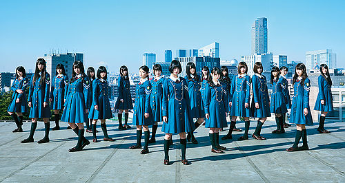
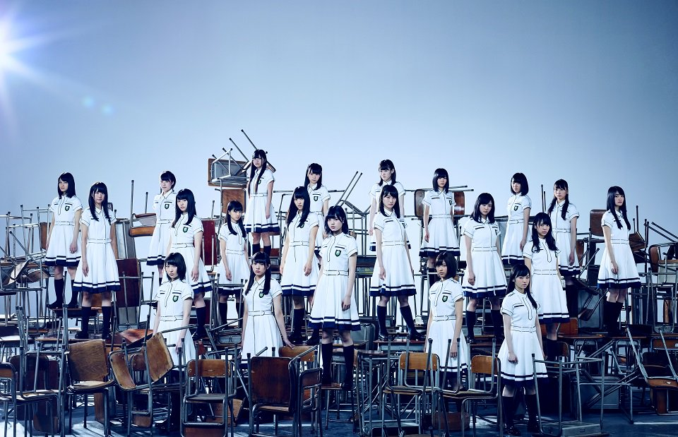
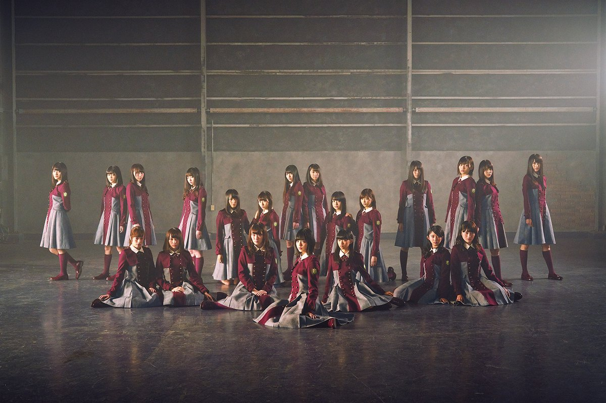
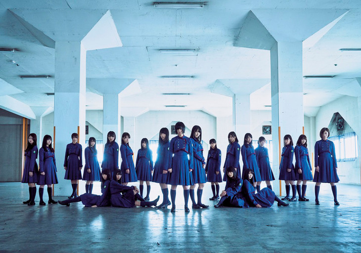
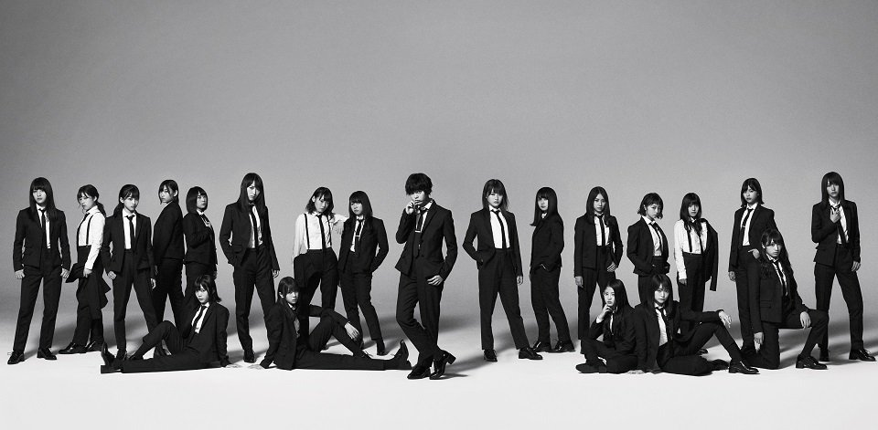
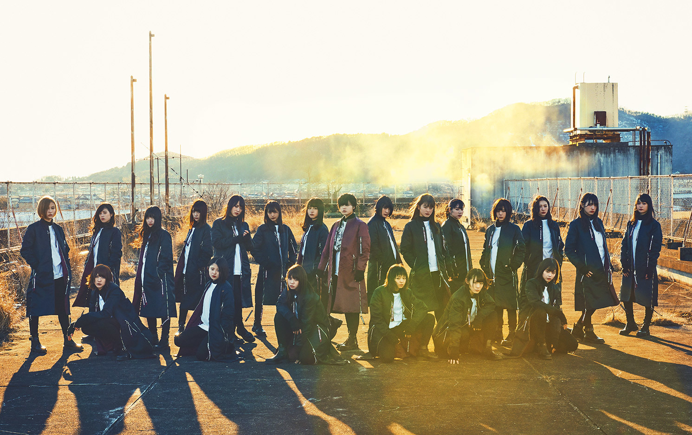
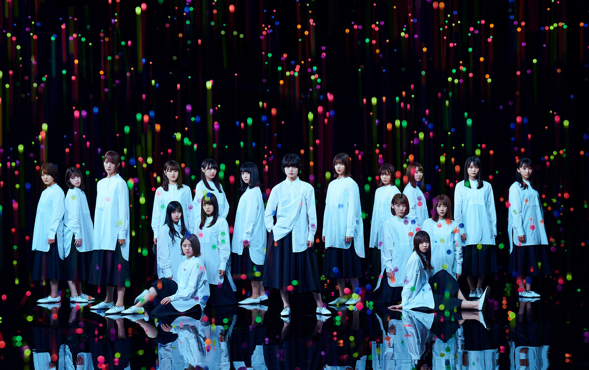
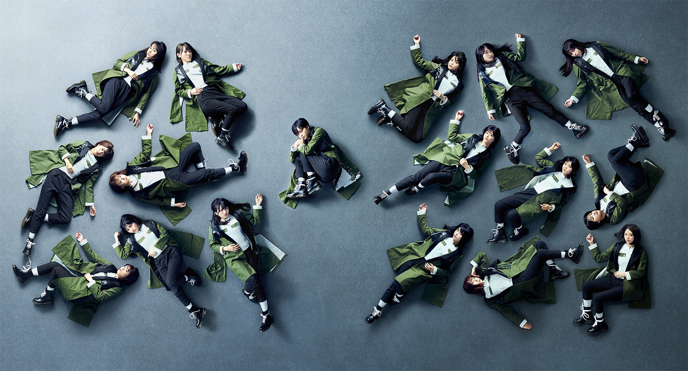

Diskografi
Dari awal debut hingga rebranding, Keyakizaka46 hanya merilis sembilan singel. Tiga singel pertama dianggap sebagai "Bright Era" karena nuansa grup ini masih cerah dan mirip idol pada umumnya. Dari singel keempat, mereka mulai mengambil langkah yang berbeda dan perlahan menjadi grup dengan "image yang gelap".
1st Single - Silent Majority
Tanggal Rilis
06 April 2016
Tracklist
- Silent Majority
- Te wo Tsunaide Kaerouka
-
- [Type-A] Yamanotesen
- [Type-B] Shibuyagawa
- [Type-C] Noriokureta Bus
- [Regular] Kimi ga Inai
- Silent Majority (off-vocal ver.)
- Te wo Tsunaide Kaerouka (off-vocal ver.)
-
- [Type-A] Yamanotesen (off-vocal ver.)
- [Type-B] Shibuyagawa (off-vocal ver.)
- [Type-C] Noriokureta Bus (off-vocal ver.)
- [Regular] Kimi ga Inai (off-vocal ver.)
2nd Single - Sekai ni wa Ai Shika Nai
Tanggal Rilis
10 Agustus 2016
Tracklist
- Sekai ni wa Ai Shika Nai
-
- [Type-A/B/C] Kataru Nara Mirai wo...
- [Regular] Bob Dylan wa Kaesanai
-
- [Type-A] Shibuya Kara PARCO ga Kieta Hi
- [Type-B] Mata Atte Kudasai
- [Type-C] Aozora ga Chigau
- [Regular] Hiragana Keyaki
- Sekai ni wa Ai Shika Nai (off-vocal ver.)
-
- [Type-A/B/C] Kataru Nara Mirai wo... (off-vocal ver.)
- [Regular] Bob Dylan wa Kaesanai (off-vocal ver.)
-
- [Type-A] Shibuya Kara PARCO ga Kieta Hi (off-vocal ver.)
- [Type-B] Mata Atte Kudasai (off-vocal ver.)
- [Type-C] Aozora ga Chigau (off-vocal ver.)
- [Regular] Hiragana Keyaki (off-vocal ver.)
3rd Single - Futari Saison
Tanggal Rilis
30 November 2016
Tracklist
- Futari Saison
- Otona wa Shinjitekurenai
-
- [Type-A] Seifuku to Taiyou
- [Type-B] Dare Yori mo Takaku Tobe!
- [Type-C] Bokutachi no Sensou
- [Regular] Yuuhi 1/3
- Futari Saison (off-vocal ver.)
- Otona wa Shinjitekurenai (off-vocal ver.)
-
- [Type-A] Seifuku to Taiyou (off-vocal ver.)
- [Type-B] Dare Yori mo Takaku Tobe! (off-vocal ver.)
- [Type-C] Bokutachi no Sensou (off-vocal ver.)
- [Regular] Yuuhi 1/3 (off-vocal ver.)
4th Single - Fukyouwaon
Tanggal Rilis
05 April 2017
Tracklist
- Fukyouwaon
- W-KEYAKIZAKA no Uta
-
- [Type-A] Hohoemi ga Kanashii
- [Type-B] Tuning
- [Type-C] Wareta Smartphone
- [Type-D] Bokutachi wa Tsukiatteiru
- [Regular] Eccentric
- Fukyouwaon (off-vocal ver.)
- W-KEYAKIZAKA no Uta (off-vocal ver.)
-
- [Type-A] Hohoemi ga Kanashii (off-vocal ver.)
- [Type-B] Tuning (off-vocal ver.)
- [Type-C] Wareta Smartphone (off-vocal ver.)
- [Type-D] Bokutachi wa Tsukiatteiru (off-vocal ver.)
- [Regular] Eccentric (off-vocal ver.)
5th Single - Kaze ni Fukarete mo
Tanggal Rilis
25 Oktober 2017
Tracklist
- Kaze ni Fukarete mo
- Soredemo Aruiteru
-
- [Type-A] Kekkyou, Jyaa ne Shika Ienai
- [Type-B] NO WAR in the Future
- [Type-C] Hiraishin
- [Type-D] Namiuchigiwa wo Hashiranai ka?
- [Regular] Saisei Suru Saibou
- Kaze ni Fukarete mo (off-vocal ver.)
- Soredemo Aruiteru (off-vocal ver.)
-
- [Type-A] Kekkyou, Jyaa ne Shika Ienai (off-vocal ver.)
- [Type-B] NO WAR in the Future (off-vocal ver.)
- [Type-C] Hiraishin (off-vocal ver.)
- [Type-D] Namiuchigiwa wo Hashiranai ka? (off-vocal ver.)
- [Regular] Saisei Suru Saibou (off-vocal ver.)
6th Single - Glass wo Ware!
Tanggal Rilis
07 Maret 2018
Tracklist
- Glass wo Ware!
- Mou Mori e Kaerou ka?
-
- [Type-A] Yoake no Kodoku
- [Type-B] Ima ni Mite Iro
- [Type-C] Zenmai Shikake no Yume
- [Type-D] Bathroom Travel
- [Regular] Hanbun no Kioku
- Glass wo Ware! (off-vocal ver.)
- Mou Mori e Kaerou ka? (off-vocal ver.)
-
- [Type-A] Yoake no Kodoku (off-vocal ver.)
- [Type-B] Ima ni Mite Iro (off-vocal ver.)
- [Type-C] Zenmai Shikake no Yume (off-vocal ver.)
- [Type-D] Bathroom Travel (off-vocal ver.)
- [Regular] Hanbun no Kioku (off-vocal ver.)
7th Single - Ambivalent
Tanggal Rilis
15 Agustus 2018
Tracklist
- Ambivalent
- Student Dance
-
- [Type-A] I'm Out
- [Type-B] Happy Aura
- [Type-C] 302-Goshitsu
- [Type-D] Ongaku Shitsu ni Kataomoi
- [Regular] Hi ga Noboru Made
- Ambivalent (off-vocal ver.)
- Student Dance (off-vocal ver.)
-
- [Type-A] I'm Out (off-vocal ver.)
- [Type-B] Happy Aura (off-vocal ver.)
- [Type-C] 302-Goshitsu (off-vocal ver.)
- [Type-D] Ongaku Shitsu ni Kataomoi (off-vocal ver.)
- [Regular] Hi ga Noboru Made (off-vocal ver.)
8th Single - Kuroi Hitsuji
Tanggal Rilis
27 Februari 2019
Tracklist
- Kuroi Hitsuji
- Kimi ni Hanashite Okitai Koto
-
- [Type-A] Nobody
- [Type-B] Dakishimete Yaru
- [Type-C] Heel no Taka-sa
- [Type-D] Gomen ne Christmas
- [Regular] Hitei Shita Mirai
- Kuroi Hitsuji (off-vocal ver.)
- Kimi ni Hanashite Okitai Koto (off-vocal ver.)
-
- [Type-A] Nobody (off-vocal ver.)
- [Type-B] Dakishimete Yaru (off-vocal ver.)
- [Type-C] Heel no Taka-sa (off-vocal ver.)
- [Type-D] Gomen ne Christmas (off-vocal ver.)
- [Regular] Hitei Shita Mirai (off-vocal ver.)
9th Single - Dare ga Sono Kane wo Narasu no ka?

Tanggal Rilis
21 Agustus 2020
Tracklist
- Dare ga Sono Kane wo Narasu no ka?